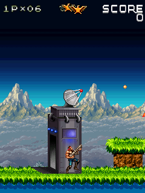

Contra was playing well. My phone also felt hot. We had enough game working to start asking what the host was doing around it, rather than chasing another startup failure.CR03
Twice-counted time.
The original callback already calculated a delay from the time it had spent on its frame. The host then subtracted the whole Android tick time again. Version 0.1.1 instead waited for the deadline established by the actual native timer registration. A press or audio event could update scheduling without secretly advancing another game tick.CR02
The image cache also watched whole memory pages. A write unrelated to a bitmap could invalidate it anyway. Exact byte-range watches narrowed that work to the bitmap’s real header, pixels and palette, while pointer or size changes rebound the watches.CR02
Completed pixel snapshots then followed framebuffer revisions. An unchanged result no longer required another complete image copy. A pending changed image also had to survive intervening same-revision audio results until Android received it.CR02
Keep the same Contra.

Original Contra4Redux right+up diagonal aiming on the opening stage.240×320 historical desktop original-engine acceptance frame, not a phone recording.
Open the image for the full original view.
CR90We compared the changes with the old runtime through movement, diagonal aiming, jumping, pause and lifecycle events. The checks followed original pixels, bitmap storage, media events and save bytes. A better-looking performance counter wouldn’t be much use if we’d changed what the game did.CR04
The matched desktop replay used about 42.5 percent less host CPU time. The precise cache repair accounted for most of that saving; changed snapshots mainly reduced allocations. We still needed phone evidence for heat and Android cadence. That desktop result answered part of the investigation my hot-phone report had started.CR03CR04CR07CR12
We could carry those timer and bitmap repairs forward. Wolfenstein’s foundation names Contra, and Katamari’s clean BioShock foundation explicitly includes Contra’s native deadlines and memory watches. The next game could start with something we’d already learned.CR01WR01KT01
A later shared-pad repair reached both Contra control modes because both already used that shared component. The engine stayed byte-identical. This was another kind of contribution: a contact-handling fix could travel without bringing an unrelated game’s runtime patch along with it.CR09
About these records
The initial phone recording/report and the later repaired host route retain their separate scopes. The efficiency percentage measures matched desktop work with forced timers and an identical virtual guest clock; it is not phone cooling, FPS or whole-process CPU. Later control-shell evidence is included where cited. The displayed frame is original-runtime desktop output, not a handset capture.
The receipts
Selected report lines, investigation notes and recorded feedback. Each receipt keeps its original source and scope.
CR03 / The game played well; the phone felt hotCheckpoint account of owner phone evidence
Source: 11-Contra_4_Bridge_v0.1.1_PRIVATE_CHECKPOINT.zip / Contra_4_Bridge_v0.1.1_PRIVATE/evidence/physical-v0.1.0/OBSERVATION.txt · selected lines 1–8
User-supplied physical-device observation, 2026-10-10: Contra 4 v0.1.0 plays well but the Samsung S25 Ultra feels hot. The supplied 28.72-second recording shows original first-stage gameplay, movement, jumping and effects. The recording is retained with the original user upload; it is not duplicated in this source checkpoint. The report records no host, guest, save or Android audio failure; no unknown interfaces or unsupported calls. Battery temperature is 37.8 C across three sparse samples. This is not a CPU, GPU or skin reading and does not rule out physical heat. No device timing or power measurement is present in that report. The v0.1.1 changes are verified on the host and in the APK. A physical-device heat difference has not been measured here.
CR02 / The timer was charged for work twiceCheckpoint investigation notes
Source: 11-Contra_4_Bridge_v0.1.1_PRIVATE_CHECKPOINT.zip / Contra_4_Bridge_v0.1.1_PRIVATE/TECHNICAL_HANDOFF.txt · selected lines 13–19
One HandlerThread owns native execution, timer pumping, saves, reports and all MediaPlayer callbacks. Android focus loss and lifecycle suspension stop scheduled gameplay and release input. Native background/resume events retain ordering even if the Activity changes quickly. Timer pacing uses the deadline recorded at the actual native IShell.SetTimer call. The original Contra callback already requests max(20, 80 - native frame elapsed) milliseconds. v0.1.0 subtracted the whole Android tick time again; v0.1.1 waits only the time remaining after registration and checks that a timer is due before pumping it. Input and audio can update the queued deadline, but do not pump timers themselves. No queued tick remains when the guest has no timer. Bitmap cache validity uses exact byte-range watches indexed by memory page, replacing whole-page versions. Writes outside a bitmap's header, backing memory and palette no longer invalidate its decoded pixels. Actual overlapping writes invalidate the cache; pointer or size changes rebind watches and released bitmaps remove them. RGB565 guest writeback remains immediate. The original executable, drawing order and guest memory format remain intact. Production operations return independent pixel snapshots only when the framebuffer revision changes. Attach and explicit report capture retain full-frame reads. The controller retains a pending snapshot across same-revision audio results so a new image is not lost before Android receives it.
CR90 / Historical image / Contra aiming diagonally in the original opening stageHistorical host capture
Source: Contra_4_Bridge_v0.1.1_PRIVATE/evidence/acceptance/09_diagonal_aim.png
Original game pixels retained from the stated historical host check. No physical-phone capture is implied.
Unchanged historical image. Source member: Contra_4_Bridge_v0.1.1_PRIVATE/evidence/acceptance/09_diagonal_aim.png SHA-256: 1fb94de1f2aeb111b75f0f1f578b8bda15b2cb2c662f09f69e27a4853a2a900b Original Contra4Redux right+up diagonal aiming on the opening stage.240×320 historical desktop original-engine acceptance frame, not a phone recording. Scope: Historical desktop original-runtime framebuffer; not phone output. Visually inspected, game only, no personal UI.
CR04 / Exact pixel comparisons survived cache and timer changesCheckpoint investigation notes
Source: 11-Contra_4_Bridge_v0.1.1_PRIVATE_CHECKPOINT.zip / Contra_4_Bridge_v0.1.1_PRIVATE/VERIFICATION.txt · selected lines 11–15
Focused cache and timer regression passed 84 assertions. An independent decoder compares cached pixels with native DIB bytes after 160 arbitrary w8/w16/w32/copy mutations, range-boundary writes, bulk writes, palette/depth/key/stride/pointer/size changes, shared backing memory and host RGB565 commits. Release and reused allocation probes leave no retired watches. Complete tap presentation retains pending pixels. Native SetTimer tests cover registration timing, pre-registration work, due callbacks, cancellation and zero delay. An external v0.1.0 baseline comparison passed 32,486 checks across boot, level entry and 180 callbacks with movement, diagonal aim, jumping, pause and lifecycle events. Every compared framebuffer, live bitmap header/backing/palette, MIDI event/data and store file agrees exactly, with matching native instructions and event/blit counts. The final compared scenario executed 25,209,889 native instructions and 78,416 blits. Uninstrumented runtime-cost replays used six runs of 100 callbacks per configuration, each with 9,513,040 original instructions, 34,829 blits and the same final frame hash. Median CPU time across the last five runs was 623.470 ms for v0.1.0 full snapshots and 358.423 ms for v0.1.1 changed-revision snapshots, about 42.5% less host CPU. Median allocated bytes fell from 40.816 MB to 39.273 MB. Snapshot equality checks occur outside the timed replay. This uses forced timers and an identical virtual guest clock; it measures desktop runtime cost, not phone temperature or Android frame cadence.
CR07 / Host efficiency did not establish phone coolingCheckpoint investigation notes
Source: 11-Contra_4_Bridge_v0.1.1_PRIVATE_CHECKPOINT.zip / Contra_4_Bridge_v0.1.1_PRIVATE/VERIFICATION.txt · selected lines 27–29
The user supplied a v0.1.0 Samsung S25 Ultra recording and report: gameplay appeared responsive, the device felt hot, and the report contained no host, guest, save or Android audio error. Three sparse battery readings of 37.8 C do not measure skin or SoC temperature. The supplied evidence informed this update. v0.1.1 verification was performed on a host JVM and the built APK. Its physical-device temperature, power, audible playback and later stages were not measured here. Host CPU comparisons do not establish a phone heat reduction.
CR12 / The cache repair supplied the CPU reduction; changed snapshots saved allocationsHistorical matched-work host comparison
Source: 11-Contra_4_Bridge_v0.1.1_PRIVATE_CHECKPOINT.zip / Contra_4_Bridge_v0.1.1_PRIVATE/evidence/equivalence/equivalence_and_profile.txt · selected lines 29–31
Timed region: 100 original gameplay callbacks plus identical scheduled movement/release/jump input; quiet runtime, deterministic virtual80ms clock. ThreadCPU and threadallocatedbytes surround only that sequence. Boot, snapshots, equality checks, native memory/palette checks, hashing and report formatting occur outside the timed region. First round excluded; median of five following rounds. CPU reduction from precise cache repair (same fullframe API):42.6%. Current presentation mode allocation reduction againstv010:3.8%. This is the implemented exact range cache, distinct from the earlier diagnostic ignore-stamp experiment. The correct Android timer-deadline fix is not included in this forced-timer runtime-cost comparison.
CR01 / Genesis and Doom supplied the execution foundationCheckpoint investigation notes
Source: 11-Contra_4_Bridge_v0.1.1_PRIVATE_CHECKPOINT.zip / Contra_4_Bridge_v0.1.1_PRIVATE/TECHNICAL_HANDOFF.txt · selected lines 1–3, 7–11
CONTRA 4 BRIDGE v0.1.1 — CURRENT HANDOFF Purpose: execute the supplied original Contra 4 Redux 1.0.9 English BREW ARM/Thumb module on Android using the Resident Evil Genesis bridge and its Doom RPG extensions. [... selected excerpt ...] The original MOD, SP resource archive, MIF, SIG and initial store bytes are retained. Game logic remains in the original executable. The host adds the BREW services it uses, including original BMP image decoding, corrected graphics color return values, memory comparisons, device information, file operations and native sound playback. The guest uses a 240x320 device profile. Android scales its framebuffer proportionally with nearest-pixel sampling. Explicit system-bar and display-cutout insets keep the output and touch controls inside Android's usable area. Directions deliver native arrow press/release events; diagonals hold two directions together. Jump uses SELECT, grapple 0, weapon STAR, drop POUND, pause CLR. Full original keypad remains accessible. Input source reference counts prevent a released touch from cancelling the same key held by a controller.
WR01 / Contra with Genesis and Doom services becomes Wolfenstein’s foundationCheckpoint investigation notes
Source: 14-Wolfenstein_RPG_Bridge_v0.1.0_PRIVATE_CHECKPOINT.zip / Wolfenstein_RPG_Bridge_v0.1.0_PRIVATE/TECHNICAL_HANDOFF.txt · selected lines 5–9
Original Wolfenstein RPG 7.1.32 en.mtv3cb (Motorola V3c English), CLSID 0x01081949, native 176x220 canvas. Original MOD/BAR/MIF/config.txt bytes are unchanged; the Android-free ARM/Thumb interpreter executes the original engine. Foundation: Contra 4 v0.1.1 bridge with Resident Evil Genesis and Doom RPG compatibility services. Native timers are independent registrations keyed callback/data, with captured registration deadlines. Earliest due callback is removed before execution; one Android worker callback pumps only due guest timers. This preserves the separate 50 ms game-loop and 100 ms sound timers which a single pending slot would overwrite. Added original startup requirements: retained bitmap QueryInterface 0x01001029 alias; GetAppletInstance during constructor via native output pointer; SYS_B+0x16C allocation annotation preserving allocated pointer; SYS_B+0x140 ARM va_list indirection; queued shell PostEvent returning native boolean success; ISound registration/config/volume notification and guest-compatible vibration calls. Rendering retains the tested original IDIB/IGraphics compatibility and coherent byte-range bitmap caches. No guest executable patches are applied.
KT01 / The clean BREW family reaches KatamariCheckpoint investigation notes
Source: 18-Katamari_Bridge_v0.1.0_PRIVATE_CHECKPOINT.zip / Katamari_Bridge_v0.1.0_PRIVATE/TECHNICAL_HANDOFF.txt · selected lines 3–19
The original 137168-byte 2008 ARMv5/Thumb module runs in the Java BREW compatibility layer. The core comes from the clean BioShock v0.2.0 lineage, including Contra's native timer deadlines and exact bitmap memory watches; the UI follows Resident Evil Genesis. It does not reuse the old hot BioShock v0.1.7 build. No gameplay is reconstructed and no game instructions are patched. TITLE INTEGRATION Class ID 0x0106CC3B, native framebuffer 240x320. Selected module/resource.bar are byte-identical across the unnumbered and screen-capture variants. Clean MIF/icon comes from the latter. All three exact original ZIPs are retained; the other 2009 variant has different native maps and archived player progress. Existing runtime gzip sources, original BMP decode/palettes and native file services cover this resource.bar. Katamari adds the display/font measurement services, original SoundPlayer memory-source handling, the optional original 0x01005000 query, and graphics circle/ellipse rendering. Circle/ellipse outlines honor no-fill mode; border thresholds are calculated once per draw.
CR09 / A shared pad repair reaches both Contra control modesCheckpoint investigation notes
Source: Contra_4_Bridge_v0.1.3_PRIVATE_CHECKPOINT.zip / Contra_4_Bridge_v0.1.3_PRIVATE/TECHNICAL_HANDOFF.txt · selected lines 3–5, 9
BOUNDED v0.1.3 UPDATE: replaced the complete shared kit with the supplied v1.1.2 source and JAR. Both MainActivity's normal pad and ContraKeypad's alternate pad already instantiate BridgeDigitalPad with verified simultaneous-cardinal inputs, so both receive the repair. MainActivity.java, ContraKeypad.java and BrewRuntime.java are byte-for-byte identical to v0.1.2. BridgeController.java differs only in versionCode/versionName and UI-kit report identifiers. No layout, game mapping, original runtime, physics, timer, audio, save, lifecycle or reporting mechanism was changed. The v1.1.2 model stores each contact's keys by stable pointer ID and sends their union. Lifting one pad finger releases only its keys; another pad finger or registered physical owner keeps any shared key held. One-thumb diagonals remain available. The update retains the previous decor/startup fix. The contact repair originates in the supplied shared kit; no Ashen-specific game/runtime changes were imported. [... selected excerpt ...] Game execution: BrewRuntime.java is byte-identical to v0.1.1. Expected SHA-256: 93d61d186c3d03fe270cf4fdf80c8d2368f6cb5331a78dc6b5e315d196897a33. MOD/SP/MIF/SIG/store and all 26 unique original MIDI assets remain exact. The timer-deadline, precise bitmap-cache watches, low-cost presentation snapshots, original saves and audio notification order remain in place.